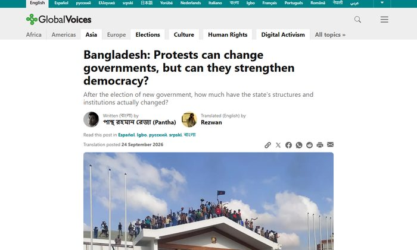
Global VoicesBangladesh: Protests can change governments, but can they strengthen democracy? 2026
⧉ Archive
Pages I’ve found that use my photographs, newest first. Most come from my openly licensed files on Wikimedia Commons, and there are many more I haven’t found.

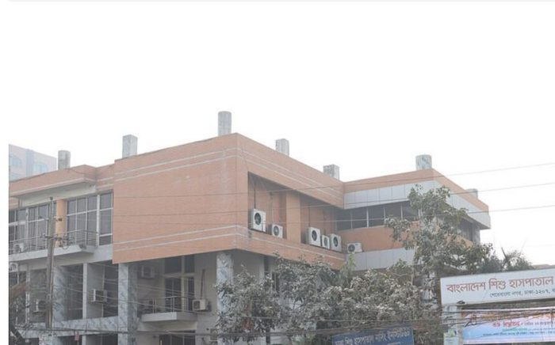
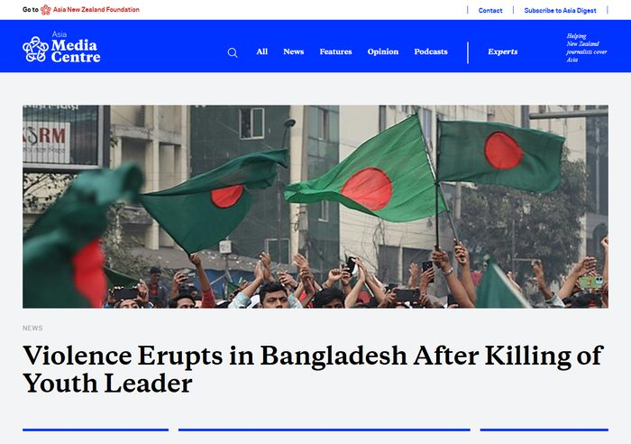
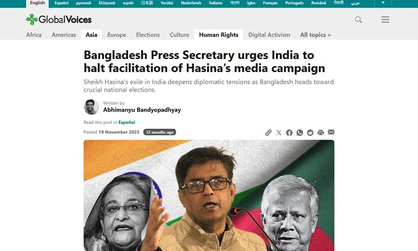
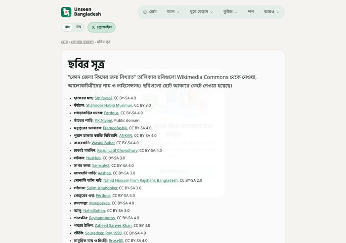
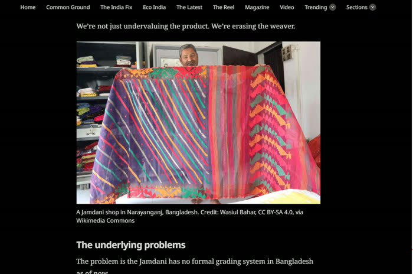
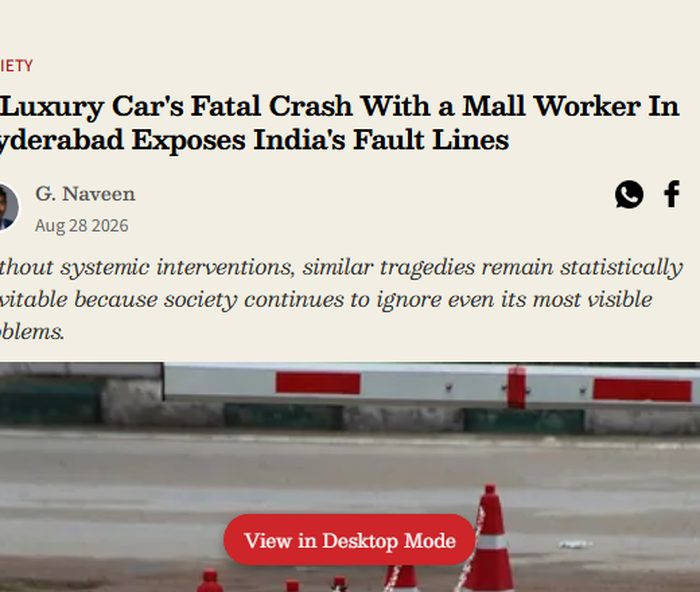
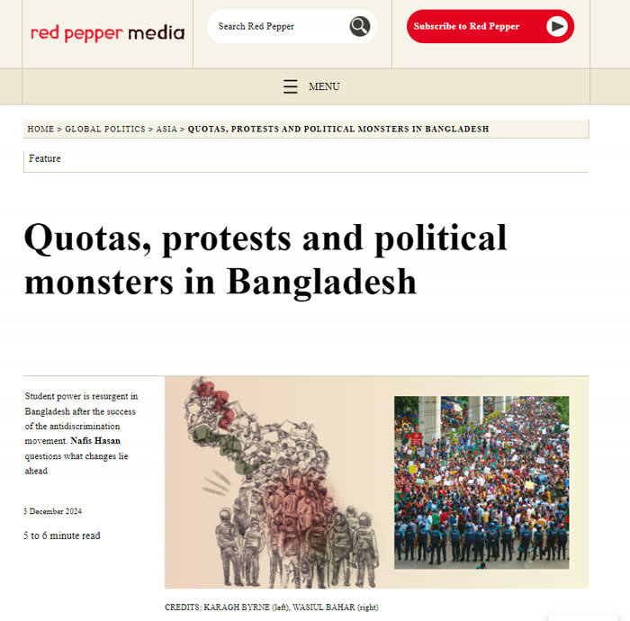
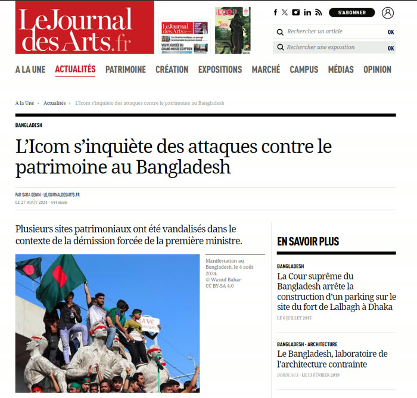
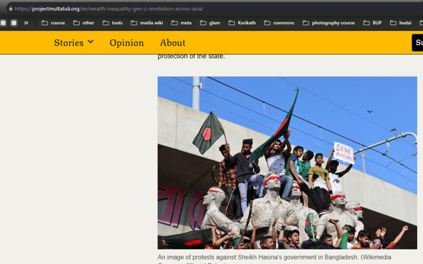
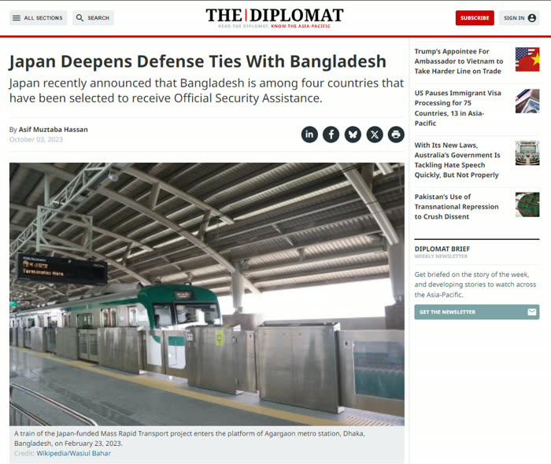
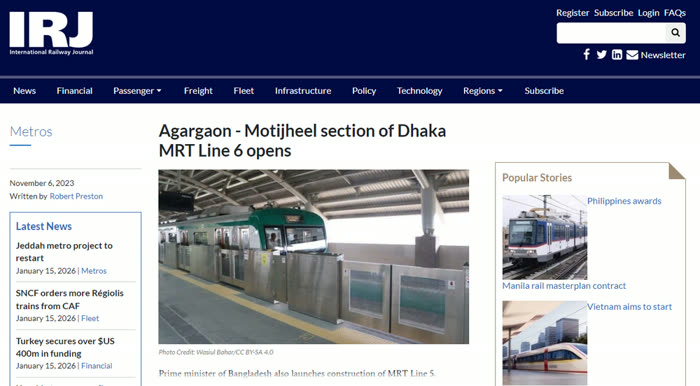
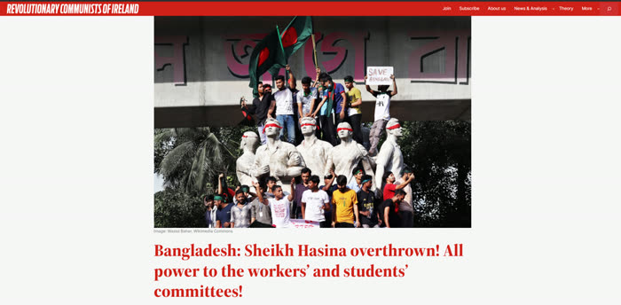
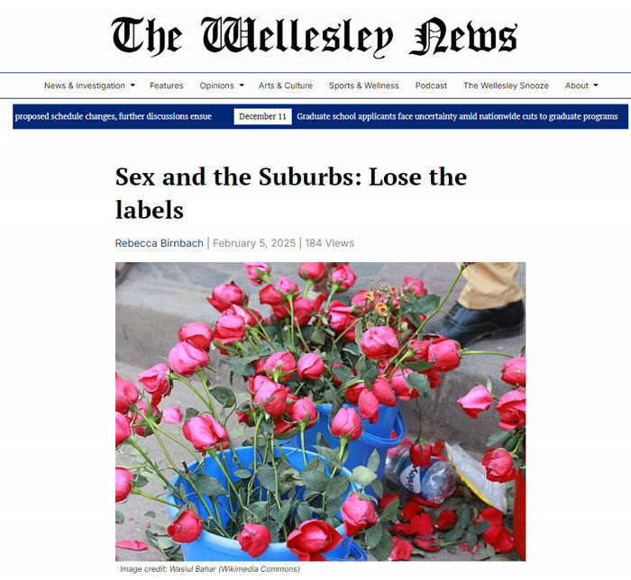
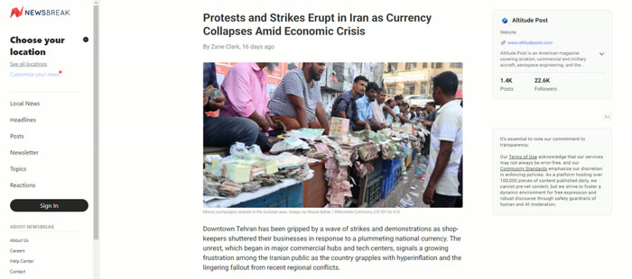
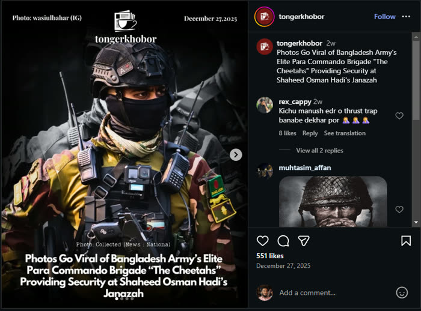
Say who you are, what you need and by when. I read everything.
↑ ↓ to move · Enter to open · Esc to close